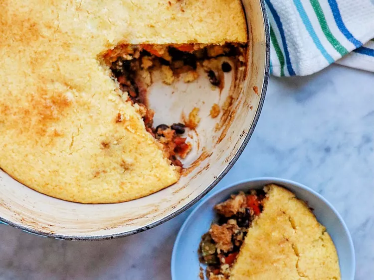

Southwestern Chicken Pot Pie

Ingredients
- 1 tbsp olive oil
- 1 lb chicken breast, diced
- 2 medium carrots, diced
- 2 stalks celery, diced
- 1 red bell pepper, diced
- 1 bunch scallions, diced
- 1 can diced tomatoes with green chiles
- 2 cans black beans, drained and rinsed
- 4 tbsp chili powder or to taste
- 1 tbsp ground cumin
- 2 tsps granulated garlic
- 2 tsps onion powder
- 1/4 tsp hot smoked paprika, or more to taste
- salt and ground black pepper to taste
- 1 package dry corn muffin mix
- 1/3 cup milk
- 1 egg
Directions
- Preheat the oven to 400 degrees F.
- Heat oil in a Dutch oven over medium heat. Add chicken. Cook, stirring occasionally, until no longer pink inside,
5 to 7 minutes. Add carrots, celery, bell pepper, and scallions and cook until tender, about 5 minutes. Add tomatoes,
black beans, chili powder, cumin, garlic, onion powder, paprika, salt, and black pepper. Stir to combine. Cook until
heated through, about 5 minutes more.
- While mixture simmers, combine cornbread mix with milk and egg in a bowl.
- Remove Dutch oven from heat and spread cornbread batter on top of chicken mixture to form the crust.
- Place Dutch oven in the preheated oven and back until cornbread is golden and beginning to brown, 20-25 minutes.
Enjoy!
Home